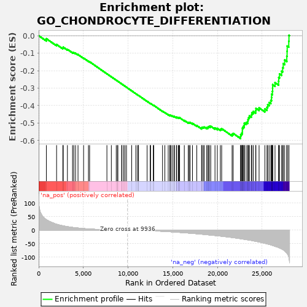

| | | Dataset | PRAD |
| Phenotype | NoPhenotypeAvailable |
| Upregulated in class | na_neg |
| GeneSet | GO_CHONDROCYTE_DIFFERENTIATION |
| Enrichment Score (ES) | -0.5884599 |
| Normalized Enrichment Score (NES) | -1.5778702 |
| Nominal p-value | 0.0 |
| FDR q-value | 0.046731018 |
| FWER p-Value | 0.991 |
Table: GSEA Results Summary

Fig 1: Enrichment plot: GO_CHONDROCYTE_DIFFERENTIATION
Profile of the Running ES Score & Positions of GeneSet Members on the Rank Ordered List
| PROBE | GENE SYMBOL | GENE_TITLE | RANK IN GENE LIST | RANK METRIC SCORE | RUNNING ES | CORE ENRICHMENT | | 1 | BMPR1B | | | 860 | 38.479 | -0.0173 | No |
| 2 | POC1A | | | 2004 | 21.752 | -0.0506 | No |
| 3 | COMP | | | 2700 | 16.089 | -0.0699 | No |
| 4 | COL2A1 | | | 2751 | 15.710 | -0.0662 | No |
| 5 | SOX9 | | | 3216 | 12.793 | -0.0783 | No |
| 6 | EIF2AK3 | | | 3790 | 9.975 | -0.0953 | No |
| 7 | IMPAD1 | | | 3933 | 9.403 | -0.0971 | No |
| 8 | IHH | | | 4125 | 8.714 | -0.1009 | No |
| 9 | CHADL | | | 4402 | 7.780 | -0.1080 | No |
| 10 | SCIN | | | 5026 | 5.804 | -0.1283 | No |
| 11 | VWA2 | | | 5570 | 4.405 | -0.1462 | No |
| 12 | TRIP11 | | | 5701 | 4.152 | -0.1494 | No |
| 13 | BMP6 | | | 7636 | 1.279 | -0.2181 | No |
| 14 | SHOX2 | | | 8132 | 0.857 | -0.2355 | No |
| 15 | GLG1 | | | 8679 | 0.481 | -0.2548 | No |
| 16 | VWA1 | | | 8813 | 0.416 | -0.2595 | No |
| 17 | CREB3L2 | | | 8863 | 0.390 | -0.2611 | No |
| 18 | MEX3C | | | 9284 | 0.207 | -0.2760 | No |
| 19 | GREM1 | | | 9324 | 0.193 | -0.2773 | No |
| 20 | CHSY1 | | | 9518 | 0.125 | -0.2842 | No |
| 21 | BMPR2 | | | 9663 | 0.079 | -0.2893 | No |
| 22 | CTNNB1 | | | 9827 | 0.034 | -0.2951 | No |
| 23 | NFIB | | | 10411 | -0.194 | -0.3159 | No |
| 24 | ACAN | | | 10872 | -0.502 | -0.3322 | No |
| 25 | COL12A1 | | | 11055 | -0.642 | -0.3385 | No |
| 26 | SMPD3 | | | 11167 | -0.738 | -0.3422 | No |
| 27 | NKX3-2 | | | 11173 | -0.742 | -0.3421 | No |
| 28 | RUNX3 | | | 12136 | -1.757 | -0.3759 | No |
| 29 | POR | | | 12477 | -2.174 | -0.3873 | No |
| 30 | ZBTB16 | | | 12524 | -2.240 | -0.3881 | No |
| 31 | BMPR1A | | | 12826 | -2.658 | -0.3980 | No |
| 32 | GDF6 | | | 12878 | -2.730 | -0.3989 | No |
| 33 | TGFBR1 | | | 13861 | -4.287 | -0.4325 | No |
| 34 | MATN4 | | | 14120 | -4.790 | -0.4400 | No |
| 35 | ANXA2P2 | | | 14498 | -5.542 | -0.4516 | No |
| 36 | WNT10B | | | 14669 | -5.879 | -0.4556 | No |
| 37 | SERPINH1 | | | 14713 | -5.979 | -0.4551 | No |
| 38 | FGFR3 | | | 14818 | -6.194 | -0.4566 | No |
| 39 | RELA | | | 14988 | -6.575 | -0.4604 | No |
| 40 | PTHLH | | | 15151 | -6.924 | -0.4637 | No |
| 41 | COCH | | | 15188 | -7.014 | -0.4626 | No |
| 42 | SNX19 | | | 15410 | -7.516 | -0.4679 | No |
| 43 | WNT5B | | | 15448 | -7.599 | -0.4665 | No |
| 44 | MATN3 | | | 15630 | -8.022 | -0.4702 | No |
| 45 | WNT9A | | | 15710 | -8.193 | -0.4702 | No |
| 46 | MSX2 | | | 15775 | -8.333 | -0.4696 | No |
| 47 | SFRP2 | | | 16298 | -9.554 | -0.4849 | No |
| 48 | HMGA2 | | | 16738 | -10.652 | -0.4969 | No |
| 49 | SULF1 | | | 16842 | -10.943 | -0.4967 | No |
| 50 | NPPC | | | 16946 | -11.223 | -0.4965 | No |
| 51 | WNT7A | | | 17214 | -11.860 | -0.5019 | No |
| 52 | HOXA11 | | | 17696 | -13.288 | -0.5145 | No |
| 53 | BMP2 | | | 18229 | -14.910 | -0.5283 | No |
| 54 | MAF | | | 18263 | -15.001 | -0.5243 | No |
| 55 | SCX | | | 18403 | -15.437 | -0.5238 | No |
| 56 | GDF5 | | | 18520 | -15.796 | -0.5225 | No |
| 57 | FGF18 | | | 18785 | -16.674 | -0.5261 | No |
| 58 | COL20A1 | | | 18933 | -17.188 | -0.5254 | No |
| 59 | SOX6 | | | 18977 | -17.300 | -0.5209 | No |
| 60 | LOXL2 | | | 19106 | -17.767 | -0.5193 | No |
| 61 | MEF2D | | | 19256 | -18.265 | -0.5182 | No |
| 62 | MEF2C | | | 19732 | -19.836 | -0.5283 | No |
| 63 | AXIN2 | | | 19995 | -20.770 | -0.5304 | No |
| 64 | TGFBI | | | 20332 | -21.893 | -0.5348 | No |
| 65 | COL14A1 | | | 20480 | -22.495 | -0.5322 | No |
| 66 | MATN2 | | | 21644 | -27.140 | -0.5643 | No |
| 67 | FGF9 | | | 21766 | -27.642 | -0.5590 | No |
| 68 | ADAMTS12 | | | 22591 | -31.440 | -0.5775 | Yes |
| 69 | MAPK14 | | | 22608 | -31.556 | -0.5671 | Yes |
| 70 | ANXA2 | | | 22692 | -32.011 | -0.5589 | Yes |
| 71 | CHST11 | | | 22796 | -32.611 | -0.5512 | Yes |
| 72 | COL6A3 | | | 22799 | -32.631 | -0.5399 | Yes |
| 73 | PKDCC | | | 22801 | -32.652 | -0.5285 | Yes |
| 74 | SIX2 | | | 22886 | -33.088 | -0.5200 | Yes |
| 75 | SULF2 | | | 23004 | -33.609 | -0.5124 | Yes |
| 76 | ANXA6 | | | 23016 | -33.710 | -0.5011 | Yes |
| 77 | IFT80 | | | 23224 | -34.759 | -0.4964 | Yes |
| 78 | TRPS1 | | | 23395 | -35.735 | -0.4900 | Yes |
| 79 | GPLD1 | | | 23423 | -35.866 | -0.4784 | Yes |
| 80 | TGFB1 | | | 23493 | -36.250 | -0.4683 | Yes |
| 81 | TGFBR2 | | | 23583 | -36.668 | -0.4586 | Yes |
| 82 | RARB | | | 23802 | -37.921 | -0.4532 | Yes |
| 83 | MUSTN1 | | | 23853 | -38.295 | -0.4417 | Yes |
| 84 | EFEMP1 | | | 24015 | -39.245 | -0.4337 | Yes |
| 85 | WNT2B | | | 24286 | -41.125 | -0.4290 | Yes |
| 86 | BMP4 | | | 24310 | -41.245 | -0.4155 | Yes |
| 87 | RUNX2 | | | 24667 | -43.558 | -0.4130 | Yes |
| 88 | ECM1 | | | 25316 | -48.377 | -0.4193 | Yes |
| 89 | OSR2 | | | 25553 | -50.410 | -0.4102 | Yes |
| 90 | SCARA3 | | | 25631 | -50.979 | -0.3951 | Yes |
| 91 | OSR1 | | | 25793 | -52.455 | -0.3826 | Yes |
| 92 | GLI3 | | | 25979 | -54.235 | -0.3703 | Yes |
| 93 | SNAI2 | | | 26058 | -54.987 | -0.3539 | Yes |
| 94 | COL7A1 | | | 26071 | -55.102 | -0.3351 | Yes |
| 95 | SOX5 | | | 26156 | -55.963 | -0.3186 | Yes |
| 96 | CYTL1 | | | 26178 | -56.258 | -0.2997 | Yes |
| 97 | MATN1 | | | 26185 | -56.313 | -0.2803 | Yes |
| 98 | VIT | | | 26451 | -59.446 | -0.2691 | Yes |
| 99 | GLI2 | | | 26844 | -64.013 | -0.2608 | Yes |
| 100 | SMAD3 | | | 26864 | -64.228 | -0.2390 | Yes |
| 101 | ADAMTS7 | | | 26954 | -65.524 | -0.2194 | Yes |
| 102 | COL6A2 | | | 27188 | -68.991 | -0.2036 | Yes |
| 103 | FGFR1 | | | 27304 | -70.987 | -0.1830 | Yes |
| 104 | ACVRL1 | | | 27371 | -72.397 | -0.1601 | Yes |
| 105 | RARG | | | 27531 | -76.397 | -0.1391 | Yes |
| 106 | COL6A1 | | | 27769 | -84.714 | -0.1181 | Yes |
| 107 | PTH1R | | | 27800 | -85.939 | -0.0892 | Yes |
| 108 | COL21A1 | | | 27813 | -86.238 | -0.0595 | Yes |
| 109 | COL27A1 | | | 27988 | -97.011 | -0.0319 | Yes |
| 110 | ZNF219 | | | 28010 | -100.420 | 0.0024 | Yes |
Table: GSEA details [plain text format]
Fig 2: GO_CHONDROCYTE_DIFFERENTIATION: Random ES distribution
Gene set null distribution of ES for GO_CHONDROCYTE_DIFFERENTIATION